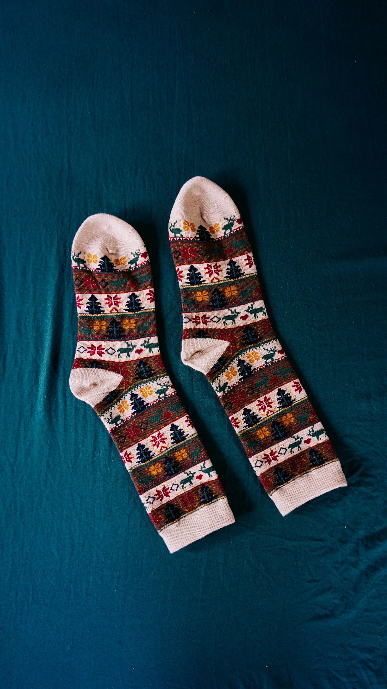
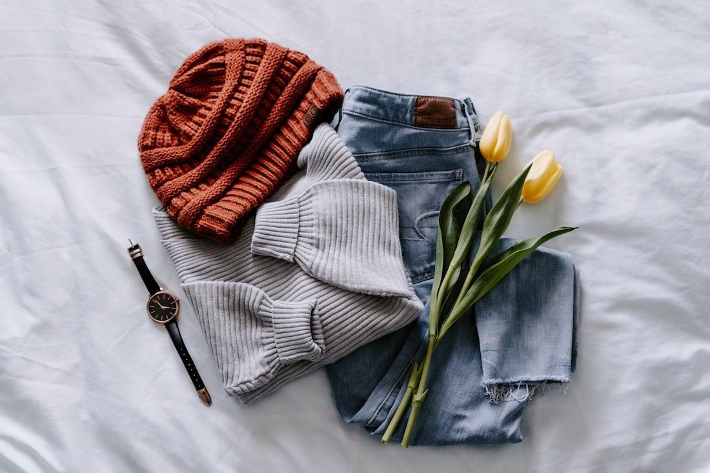
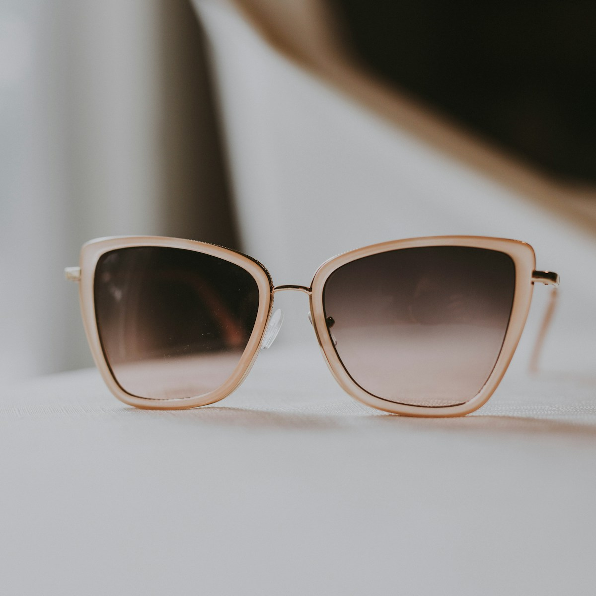

Cloudlike Warmth. Alpine Thermal Mastery.
Welcome to Warm Weave Hill, where high-altitude mountain heritage meets the fine art of seamless knitwear. Hand-spun from ethical ultra-fine Merino wool, cashmere, and organic alpaca fibers, our socks provide breathable thermoregulation for rugged alpine trails and cozy fireside retreats alike.

Reclaiming Everyday Comfort as a Fine Art
In a hurried modern world governed by synthetic polyester and mass-produced fast fashion, our feet bear the brunt of everyday fatigue. At Warm Weave Hill, we believe that the simple act of pulling on a pair of masterfully knitted, cloud-soft wool socks is a transformative tactile ritual—an anchor of warmth, grounding, and peace.
Nestled in the foothills of the high alpine ranges, our family-owned mill combines ancient hand-spinning lore with 200-needle circular knitting machinery. We eliminate the irritating, bulky toe ridges of commercial hosiery by hand-linking every toe seam loop by loop, creating an entirely frictionless sanctuary for your feet.
- • 18.5-Micron Extra-Fine Merino Wool: Silky soft against sensitive skin with zero itch or prickly irritation.
- • True Hand-Linked Seamless Toes: Infinite step comfort with zero blisters or pressure hotspots.
- • Engineered Dynamic Arch Support: Ribbed elasticated band that prevents sock slippage inside heavy winter boots.
Four Pillars of Alpine Sock Mastery
Every stitch is calculated for moisture vapor evacuation, impact cushioning, and multi-year durability.
Natural Thermoregulation
Merino wool fibers feature microscopic air pockets that trap body heat in freezing sub-zero weather while breathing effortlessly in mild cabin climates.
Vapor-Phase Wicking
Wool can absorb up to 35% of its dry weight in moisture vapor before feeling damp, preventing foot clamminess and neutralizing odors naturally.
Botanical Dye Baths
Colored exclusively with sustainable madder root, elderberry, walnut husks, and oak gall extracts, ensuring toxin-free purity against bare skin.
High-Density Terry Cushion
Reinforced high-density looped terry padding throughout the heel and footbed absorbs walking shock and resists premature wear over thousands of miles.
The Permanent Sock Collection
Engineered for extreme sub-zero mountain traverses, restorative cabin reading, and everyday dress comfort.
 Alpine Trail
Alpine Trail
The Summit Expedition Boot Sock
Our flagship heavy-cushion crew sock. Features full-length terry loops, reinforced heel-and-toe ballistic armor, and vented instep channels for demanding backcountry ascents.
 Ultra-Luxe
Ultra-Luxe
The Highland Fireside Bed Sock
An indulgent, zero-compression cloud of warmth. Spun from un-dyed Peruvian royal alpaca and Mongolian cashmere for tranquil sleep and fireside reading.

Heritage KnitThe Nordic Timberline Jacquard
Classic Scandinavian geometric patterns knitted with multi-colored natural vegetable-dyed wool yarns. Medium-weight cushioning for everyday winter footwear.
The Warmth & Cushioning Studio
Tailor your ideal fiber blend, footbed cushioning density, and cuff height to find your perfect sock companion.

The Natural Microclimate on Your Feet
Human feet possess over 250,000 sweat glands, capable of releasing nearly half a pint of moisture vapor daily during active mountain hiking or vigorous physical work. When trapped in non-porous synthetic petroleum socks (such as polyester or acrylic), this moisture condenses into liquid water against the skin, rapidly conducting body heat away and creating the painful precursor to blisters and frostnip.
Merino wool operates via a complex biological thermodynamic mechanism known as the heat of sorption. The interior cortex of the wool fiber is hygroscopic (attracting moisture vapor), while the exterior cuticle is hydrophobic (repelling liquid droplets). As wool fibers absorb internal sweat vapor, chemical bonds release exothermic heat energy, actively keeping your feet dry, warm, and blister-free in temperatures ranging from -30°C to +20°C.
Natural Keratin Antimicrobial Shield
The natural keratin proteins in raw Merino wool break down odor-causing bacteria molecules naturally, allowing our socks to be worn on multi-day backcountry treks without developing odor.
The Vanishing Art of the Hand-Linked Toe
If you turn an ordinary commercial sock inside out, you will find a thick, rigid ridged seam running straight across the tops of the toes. This ridge is created by high-speed industrial overlock machines that rapidly pinch and sew excess fabric together. When pressed against the toe box of stiff hiking boots or leather dress shoes, that seam causes friction, redness, and blisters.
At Warm Weave Hill, our artisans practice traditional hand linking (Rosso point-to-point remettage). Using a circular dial linking machine, every single knitted loop of the upper foot is individually aligned and woven stitch-by-stitch to the opposing sole loop with a single unbroken yarn strand. The result is a completely flat, microscopic seam that cannot be felt by the human foot.
- • Zero bulk, zero friction ridges, and zero pressure points over sensitive toe joints.
- • 100% loop-to-loop structural continuity that will never blow out under downhill trail impact.
- • Inspected under lighted magnification before leaving the linking workbench.

Tinctures Born From Alpine Earth
We reject harsh petrochemical azo dyes and heavy-metal fixatives, coloring our wool yarns with time-honored organic botanical baths.
Wild Madder Root
Simmered roots of Rubia tinctorum produce our signature warm terracotta and burnt alpine cinnamon hues, rich in natural lightfast pigments.
Green Walnut Husks
Harvested in late autumn, fermented walnut shells yield deep, earthy amber and chestnut browns that bind permanently with wool protein fibers.
Mountain Oak Galls
Naturally tannin-rich oak gall tinctures combined with natural iron mordants create our soothing alpine slate, pine charcoal, and mist grays.
From Mountain Fleece to Hearth Comfort
Follow the methodical five-step journey required to transform raw shorn fleece into lifetime heirloom socks.
Ethical Shearing & Micron Sorting
Raw fleeces are sourced exclusively from non-mulesed sheep farms, hand-graded under sunlight, and sorted to separate ultra-fine 18.5µm fibers from coarser wools.
Gentle Spring-Water Scouring
Wool is gently washed in pure mountain runoff water with natural plant soaps to extract dust and excess lanolin without damaging fiber cuticle scales.
Worsted Ring Spinning & Botanical Dyeing
Fibers are parallel-carded, spun into strong 2-ply worsted yarns, and steeped in slow botanical dye kettles until saturated with rich earthy color.
200-Needle Circular Knitting & Hand Linking
Socks are knitted on precision Italian cylinders with targeted terry cushion zones, followed by individual loop-by-loop hand linking of the toe closure.
Wooden Board Blocking & Steam Curing
Every pair is shaped on hand-carved birchwood blocking forms and gently steam-cured to lock in permanent shape retention and shrink resistance.
Tested in Freezing Cold & Alpine Silence
Experiences from thru-hikers, mountaineers, and cozy cabin lovers who trust Warm Weave Hill.
"I wore the Summit Expedition socks across a 240-mile winter traverse in the Swiss Alps. Through slush, frozen snowpack, and 12-hour trekking days, my feet stayed completely warm, dry, and blister-free. Unbelievable durability."
"The Highland Fireside Bed Socks are pure heavenly magic. Slipping them on after a long snowy walk feels like wrapping your feet in warm clouds. The seamless toe makes all the difference in the world."
"As someone with sensitive skin who usually finds wool itchy, Warm Weave Hill changed everything. The 18.5 micron Merino feels as smooth as silk, and the botanical madder color is stunning."

Rooted in Kindness to Flocks & Soil
At Warm Weave Hill, our relationship with wool begins with profound gratitude toward the animals who grow it. We source 100% of our Merino and alpaca fleeces exclusively from farms certified under the Responsible Wool Standard (RWS), guaranteeing strict animal welfare, pasture regeneration, and a zero-tolerance policy against mulesing.
Our circular production ethos produces zero synthetic microplastic shedding. When washed, our socks shed natural biodegradable wool fibrils that harmlessly decompose in soil within three to six months. By investing in honest, durable natural fibers, we help protect the pristine mountain ecosystems we cherish.
Explore Our Sustainability CharterThe Lifetime Trail & Hearth Guarantee
We knit our socks to outlast thousands of mountain trail miles and countless winters by the fire. If your Warm Weave Hill socks ever develop a premature hole, tear, or seam unraveling under normal use, send them back to our alpine mill for complimentary replacement or re-weaving.
Dispatches on Woolcraft & Winter Living
Deep-dive treatises on Merino thermodynamics, hand-linked seamless toe mechanics, natural botanical dye foraging, and cold-weather foot health.

Botanical Dyeing for Wool: Forest Foraging & Mordant Chemistry
An exhaustive guide to extracting lightfast earthy hues from madder roots, black walnut husks, and oak galls for non-toxic knitwear dyeing.
Read in Journal →
The Mechanics of the Seamless Toe: Why Machine Ridges Cause Blisters
Exploring point-to-point dial linking, frictional podiatric shear forces, and why seamless construction is vital for long-distance hiking comfort.
Read in Journal →
Thermoregulation & Sleep Quality: The Science of Bedtime Wool Socks
How warming peripheral extremities accelerates core body temperature cooling, promoting deeper restorative rapid-eye-movement sleep phases.
Read in Journal →Frequently Asked Questions
Everything you need to know regarding wool care, washing rituals, sizing calibrations, and our lifetime guarantee.
Turn socks inside out and machine wash on a gentle wool/cold cycle (30°C / 85°F) using a mild, pH-neutral wool detergent. Lay flat to dry away from direct heat radiators. Because Merino is naturally antibacterial and odor-resistant, you can comfortably wear your socks 2 to 3 times between washes.
Not at all. Coarse traditional wool fibers measure above 30 microns and cannot bend against the skin, causing prickling sensations. In contrast, our ultra-fine 18.5-micron Merino fibers bend smoothly against sensitive skin, providing a silky, cloud-soft touch with zero itch.
Standard mass-market socks use automated overlock sewing machines that leave a raised, bumpy ridge across the toes. Over long walking distances, this ridge rubs against skin and causes blisters. Hand linking connects loop to loop with a single flat thread, eliminating all friction ridges entirely.
For fitted leather boots or close-fitting trail runners, our Medium Terry Loop Cushion is ideal. For mountaineering boots or freezing winter conditions where boots have extra volume, our Ultra-Plush Heavy Cushion fills negative space and creates maximum thermal insulation.
Yes. All orders are packed in 100% recycled unbleached kraft paper boxes tied with natural jute twine and sealed with water-activated paper tape. We never use single-use plastic poly bags.
Join Our Seasonal Woolcraft Club
Receive private dispatches regarding rare botanical dye yarn releases, seasonal cabin socks allocations, and traditional textile craft guides.